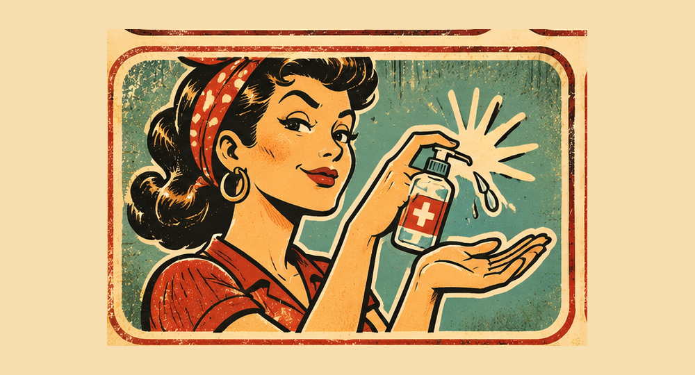
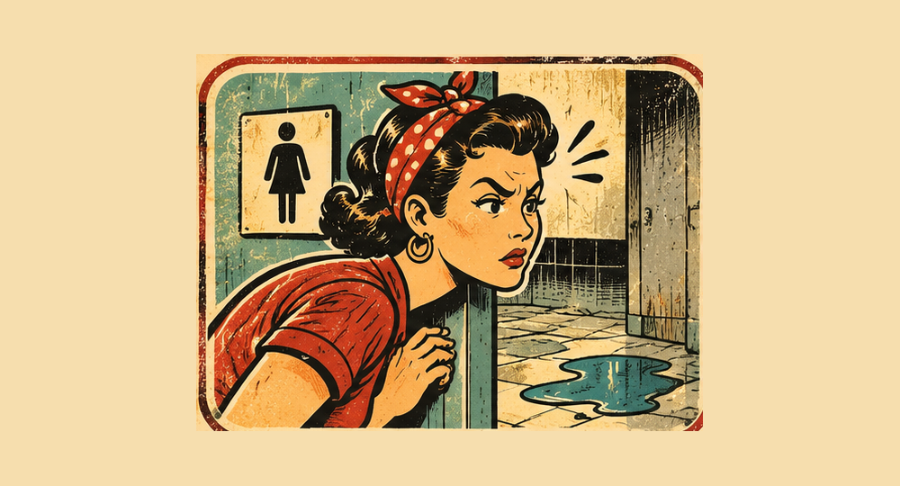
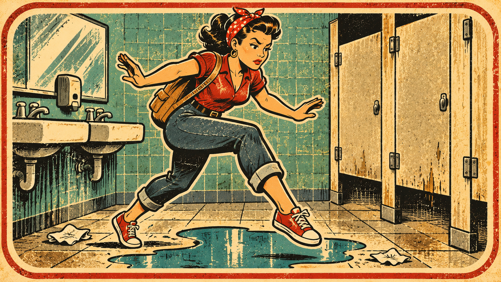
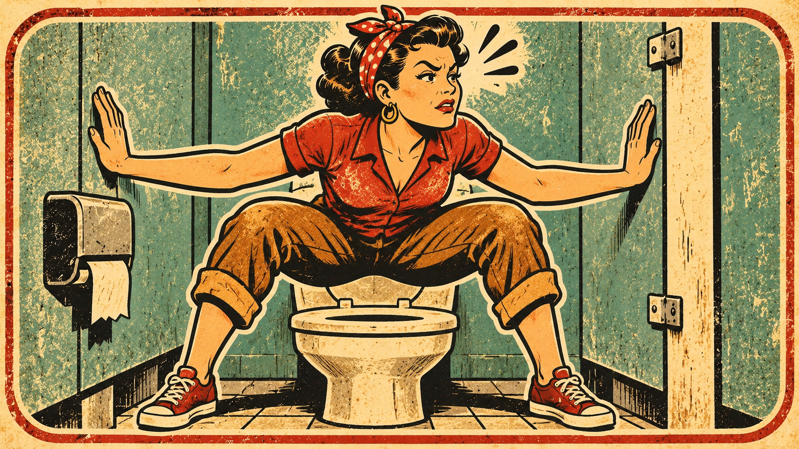
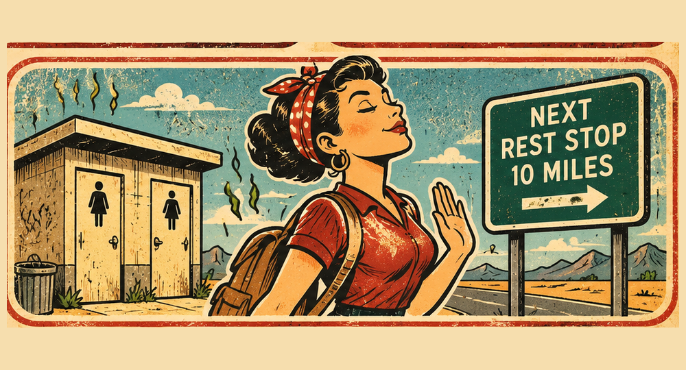

The Survival Guide
Because sometimes, you have no other choice.
The Five Commandments of the Commode
Five rules. One mission. Leave with your dignity intact.
-

RULE 01Always Carry Backup
Toilet paper, sanitizer, and disinfectant wipes. You'll thank yourself later.
-

RULE 02Inspect Before You Commit
A quick look around can save you from a regrettable decision.
-

RULE 03Never Trust the Floor
If it's wet, don't ask questions. Just watch your step.
-

RULE 04Master the Hover
Some situations require creativity, balance, and unexpected athleticism.
-

RULE 05Know When to Walk Away
Sometimes the best bathroom experience is the one you never had.
A Little Preparation Goes a Long Way
Because some restroom visits require preparation.
THRONE REPORT BROADCASTING CO. — EST. 2026
Emergency Survival Tip
Not every restroom situation is ideal. Need a little backup?
The Porcelain Inquisition
Questions nobody wanted to ask. Answers nobody asked for.
Are These Reports Legit, or Are We Full of It?
Our reports are fictional and written for entertainment. The questionable restroom decisions? Those are all yours.
What's in Your Emergency Throne Kit?
Hand sanitizer, disinfectant wipes, and backup toilet paper. Because hope is not a reliable restroom strategy.
What If the Restroom Looks Like a Crime Scene?
Trust your instincts. If you need protective equipment just to enter, it's probably time to keep driving.
Emergency Exit Strategy
When nature calls and your options are questionable, know where to go.